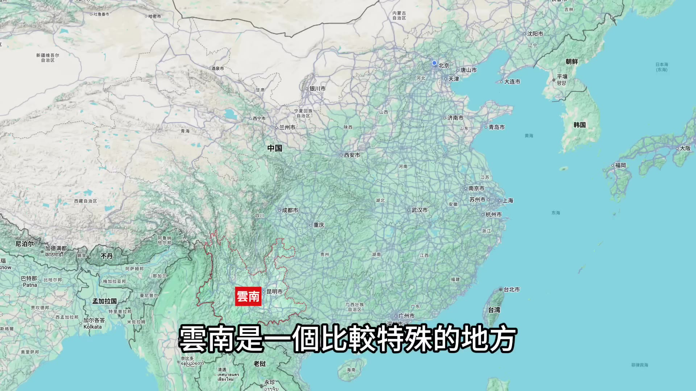
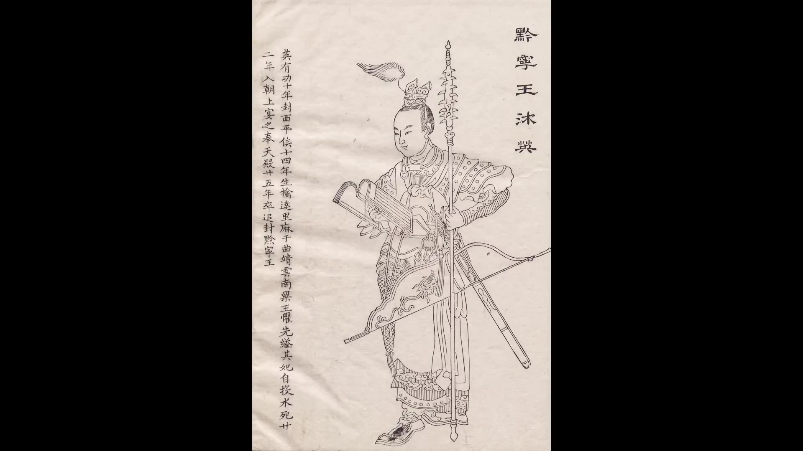
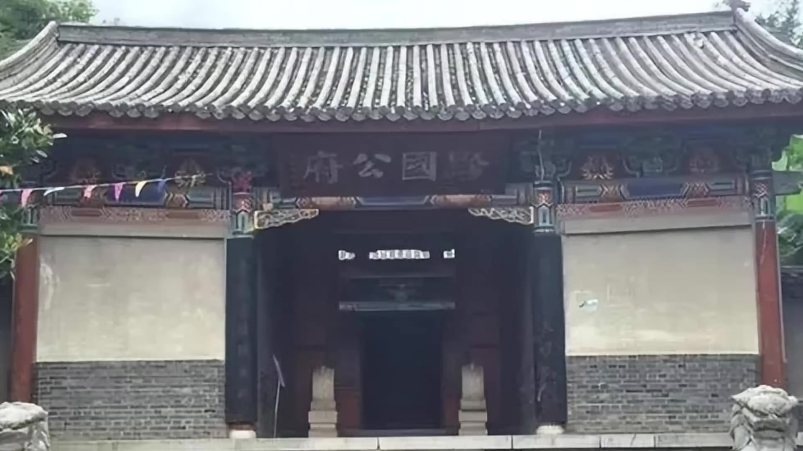
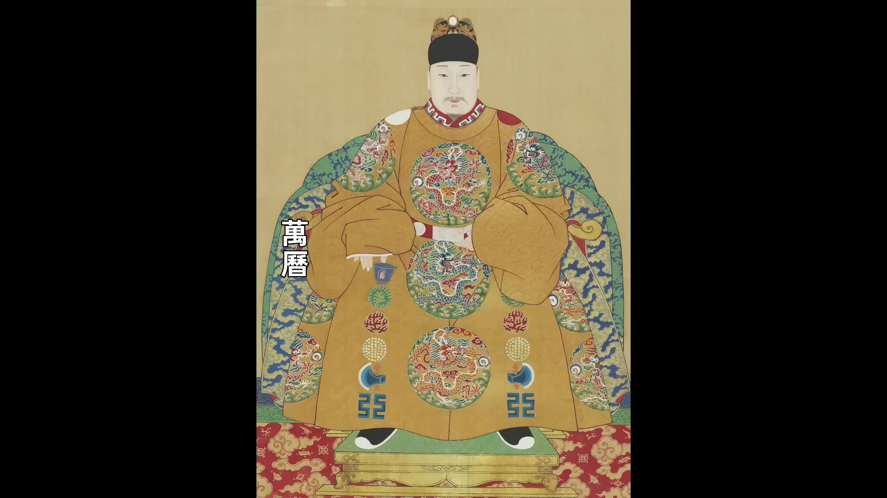
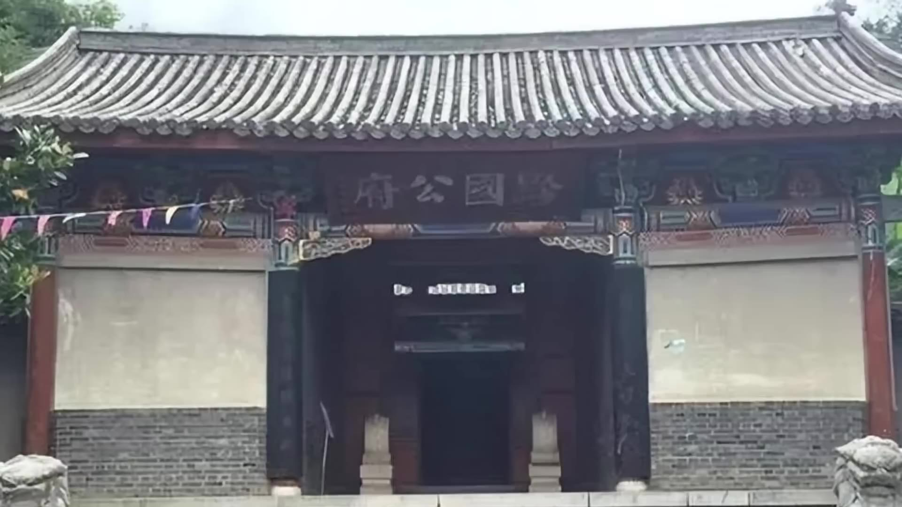
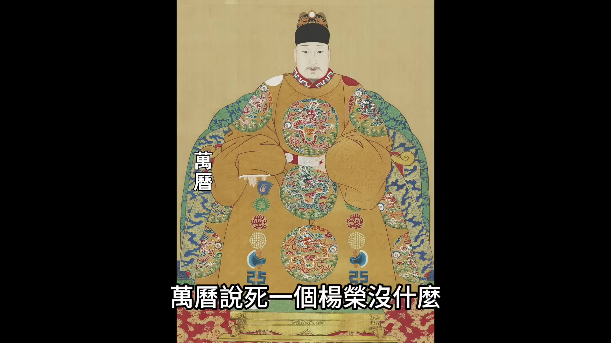
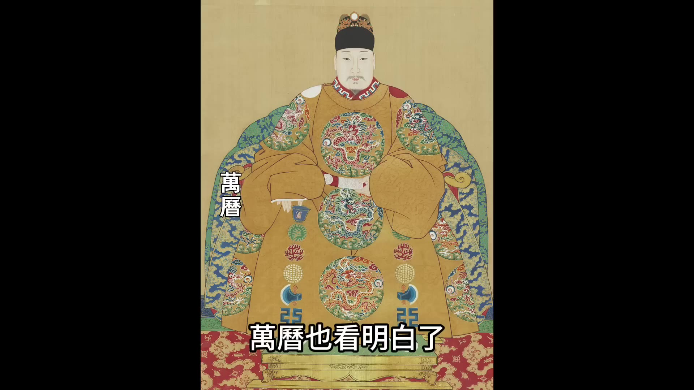
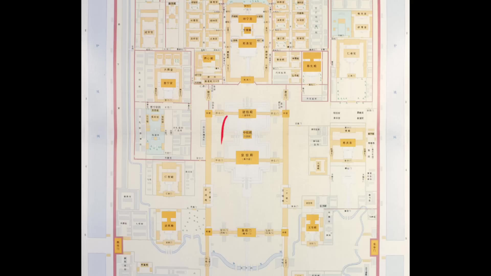
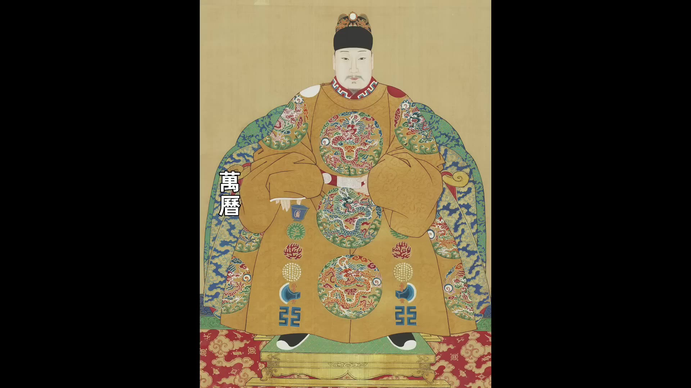

00:00:00
萬曆三十四年三月，已經多年不上朝的萬曆皇帝在看到一份奏報後被氣得吃不下飯。這份奏報來自遙遠的雲南，內容指出雲南指揮使賀世勳率領人馬闖入雲南礦稅使楊榮的官署，展開大屠殺。楊榮當場被殺，其下屬200多人亦被殺戮殆盡，賀世勳更放火燒毀楊榮官署。此事件被稱為「雲南礦稅案」，其特殊之處在於衝突雙方皆為朝廷官員：殺人者賀世勳為正三品武官，被殺者楊榮為萬曆親派、享有特權的太監。萬曆親自派遣的太監遭地方武官公然殺害，等於公然打萬曆的臉，萬曆絕不能善罷甘休。然而當其欲徹查時，卻發現雲南礦稅案竟查不下去。
雲南礦稅案只是萬曆年間礦稅之禍的縮影。萬曆年間，各地反對礦稅的鬥爭此起彼伏從未停止。萬曆二十六年曾有抗稅民變導致礦稅使馬堂落荒而逃；萬曆二十九年武昌民變中，百姓甚至放火燒了礦稅使陳奉的官署。萬曆派出的礦稅使在湖廣、遼東、福建、雲南等地皆激發大量民變。萬曆的礦稅搞得全國怨聲載道，甚至有人認為礦稅催化了明朝滅亡。礦稅究竟是什麼？萬曆為何要收礦稅？礦稅是否動了某方利益？明朝滅亡是否與礦稅有關？帶著這些問題，我們從雲南礦稅案切入，探討萬曆收礦稅的來龍去脈。
首先需了解雲南的特殊性。雲南地處邊陲，自元明之前長期為獨立政權。元朝忽必烈滅大理國後將雲南納入版圖，至明朝洪武十四年，朱元璋派傅友德、藍玉、沐英遠征雲南，徹底將其納入明朝版圖。征服後，朱元璋因雲南地形複雜、部族眾多、土司林立，採用特殊安排：在大軍班師後，將沐英留下並封為西平侯，令沐氏家族世代鎮守雲南。永樂年間，沐英之子沐晟因打交趾立功，被晉升為黔國公。自此黔國公府對雲南的統治持續200多年，與朝廷關係微妙。

儘管朱元璋旨意讓沐氏鎮守雲南，後期明朝皇帝仍往雲南派遣鎮守太監與巡撫，形成黔國公府、鎮守太監、巡撫三足鼎立的局面。他們需同時管理雲南百姓與各地土司家族，使雲南成為極具複雜性的特殊地區。正是因雲南特殊性，萬曆在萬曆三十四年大規模派遣礦監稅使至全國時，對雲南的處理顯得猶豫不決——他早在萬曆二十七年才派礦稅使至雲南，比其他地區晚了三年。


萬曆派礦稅使前，雲南官員已明確表示不歡迎。當時雲南巡撫陳用賓曾上奏疏，指出雲南地處邊疆、與異邦接壤，內部漢人與土著雜居，形勢複雜，與內地迥異。當地百姓已不堪重賦，若朝廷再派礦稅使，極易激發矛盾。為邊疆安定，請求皇帝勿派礦稅使。然而萬曆仍因雲南礦產豐饒而動心——根據當時記載，江南數省銀銅產量均不及雲南一半。最終，萬曆仍於萬曆二十七年派尚膳監太監楊榮為雲南礦稅使。楊榮職位雖高（尚膳監為內廷十二監之一，掌管宮中所有食物供給，為肥缺），但其經驗不足，僅擅長廚房事務，缺乏處理複雜政務的經驗。此舉風險極高，與雲南官員對礦稅使的抵觸態度形成尖銳矛盾。

00:05:01
就算楊榮他是一個經驗豐富的官員，他到雲南之後都需要格外小心。偏偏楊榮又是一個不會小心行事的人，他到雲南之後仗著有皇帝撐腰，格外的囂張跋扈。楊榮到了雲南之後，他根本就不是真的開礦，天天在皇宮裡面管的是做飯，哪懂什麼開礦？再說開礦從勘探到開採到冶煉過程相當漫長，皇帝著急要錢也沒耐心等。所以楊榮他們這些監到了地方之後，很少真的開礦收稅，他們都是借著開礦之名行收稅之實。他們發明了很多借著開礦弄快錢的門道，比如說一個地方本來就有正在開採的並且經營得很好的礦，他們就直接插手說這是官礦要按照很高的比例抽稅。再比如說他們到一個富裕的犬戶人家裡面，說這家房屋底下埋著有礦，他們要奉旨開採，結果呢這戶人家只好拿錢消災，奉上一大筆錢保住自己家的房屋。還有的礦稅使專挑富貴人家的祖墳下手，說人家祖墳下面有礦要挖墳開礦，嚇得大戶人家只能花錢消災。還有的礦稅使更直接，直接把收稅指標攤派給地方官府和當地百姓，不交錢他們就直接抓人。萬曆給了這些礦稅使獨立的司法權，他們可以以「阻礙朝廷大計」或者說「隱藏礦產」的名義直接抓人，不需要經過地方官府也不受到刑部的管控。這些太監還有「密折專奏權」，他們可以直接寫密折遞給萬曆皇帝，如果地方官員不配合他們，一個密折告上去說地方官員「阻撓礦稅」，甚至他們有時候說地方官員「意圖謀反」，這些官員的結局通常就會很慘，輕則丟官，重則被直接下詔獄。所以礦稅使下到地方之後，地方官員對他們都是敬而遠之，即使眼看著他們敲詐百姓也不敢過多干預。有很多礦稅使貪得無厭，他們不光敲詐富裕人家，老百姓被搞到實在活不下去的時候就會爆發民變。民變發生的時候地方官府就很為難，他們鎮壓也不是，不鎮壓也不是，他們要是出兵鎮壓這些參與暴動的都是平時的老百姓，是被逼無奈才鬧事，他們也不忍心鎮壓，而且又不是他們搞出來的事，事是皇帝派來的礦稅使搞出來的，他們沒撈到一分錢好處。但他們要是不鎮壓，這些太監們就會向皇帝告狀說地方官員煽動百姓造反，他們就得受處分。所以地方官員對這些礦稅使也是痛恨至極。

楊榮到雲南之後，他鬧的是官怒民怨，他不僅敲詐富裕人家，甚至連士司老爺都不放過。比如麗江有一個土司老爺叫木增，楊榮讓木增拿出部分土地用於朝廷開礦，實際上他就是在敲詐木增。木增是麗江赫赫有名的土司家族，他這個木姓都是由朱元璋親賜的，歷代的黔國公和雲南巡撫對麗江木府都是客客氣氣，楊榮居然敢敲詐木增，這是跟雲南的地方勢力開始結仇。除了得罪土司之外，楊榮還給雲南引來了一場兵禍。萬曆二十八年，楊榮剛到雲南一年，他就上奏皇帝說阿瓦、猛密等地有礦，如果開採的話每年收入可觀。當時的國境線劃分不明確，阿瓦和猛密是明朝和緬甸之間的敏感地帶，按照現在的劃分，猛密都已經是屬於緬甸了。楊榮猛密開礦一說要去阿瓦，雲南巡撫更是上了一道奏疏給皇帝說「寶井一開，兵端必起」，指責楊榮這麼做肯定會引來邊疆的兵禍。但是萬曆對這些反對的意見都置之不理，他任由楊榮我行我素，最終果然楊榮的行為引起了兵端。萬曆三十年，緬甸數萬人馬攻入了雲南騰越，騰越距離騰衝差不多30公里。兵端一起，鎮守雲南的軍隊就要浴血疆場，他們對引起衝突的楊榮更是恨得咬牙切齒。
除了文官武將之外，雲南還有一個最大的衙門是黔國公府，黔國公沐家是雲南真正的土皇帝，在他們看來這片土地產出的東西都應該是他的私產。楊榮千里迢迢跑來雲南開礦抽稅，抽到的稅全部都收歸中央，這不就是從黔國公府虎口奪食嗎？所以黔國公雖然沒有公開反對楊榮，但是到最後楊榮遇到危險的時候他也沒出手相救。楊榮在雲南八年，他搞的官怒人怨之後，終於在萬曆三十四年爆發了一場大規模的民變，昆明一帶的漢人和很多少數民族的人聚集起來，有一萬多人包圍了楊榮的官署。楊榮對這個場面他也不害怕，因為他見多了，剛來到這的第一年就被一群生員給圍住讓他滾出雲南，最後他把這批生員全部都嚴厲處罰。
00:10:01
後來的幾年裡，雲南也爆發過好幾次民變，每次楊榮都強力鎮壓。有一次，他逮捕了上千名百姓，將這些百姓全部用酷刑拷打致死。對於百姓鬧事，楊榮已經司空見慣，毫不害怕。但讓他沒想到的是，這次混在普通百姓裡面的居然有大量訓練有素的正規軍。正規軍的出現，是因為楊榮跟昆明城內的駐軍結仇了。事情的起因是楊榮在前段時間跟昆明駐軍的指揮使賀瑞鳳要40匹馬，他說自己開礦要跋山涉水需要用馬。賀瑞鳳不論是真沒馬了，還是故意拖著不給，反正到時間了他沒把馬匹湊齊。楊榮一怒之下就派人把賀瑞鳳逮捕入獄，並放出狠話說要把昆明六衛所的軍官全部抓起來。這下徹底激怒了昆明的駐軍，他們認為橫豎都是死，不如先下手為強。不知道是誰煽動了本地的百姓，最後的場面就是軍營士兵跟本地百姓一起包圍了楊榮的官署。指揮使賀世勳率領眾人衝進來，把楊榮當場殺死，隨從200多人也被全部殺戮殆盡，還放火燒了官署。消息傳到北京之後，「上怒不食」——上怒不食就是說皇帝氣到吃不下飯。

萬曆說：「死一個楊榮沒什麼，可國家綱紀已經敗壞到這種程度還能不問嗎？他要徹查整個事件。」皇帝想徹查，可是大臣們偏偏不曾逢迎上意。首先上疏的是雲南巡撫陳用賓，陳用賓的奏疏裡面並沒有提這個案件，他上書的所有內容都是在揭發楊榮在雲南幹的壞事。他把楊榮在雲南幹的壞事一樁一樁、一件一件全都揭發出來，最後還加上一句說楊榮在雲南搜刮的財富只有十分之一是給到了皇帝的內帑，剩下的都被他中飽私囊。*陳用賓用的這招實際上是圍魏救趙——楊榮是在他的地盤被打死的，還是被官兵打死的，他肯定有責任，但是他不說楊榮被打死的事，他只是揭發楊榮的劣跡，他的意思就是說楊榮犯了眾怒，罪有應得。*雲南官場是這種態度，京城官員對這件事情也不願意深究。萬曆的旨意下發到內閣之後，內閣大學士沈鯉找到秉筆太監陳矩，這兩個老臣一商量，認為應該大事化小小事化了。陳矩就去勸萬曆皇帝。內閣和司禮監的態度是這樣，連多年不問政事的李太后都出來說話了。李太后是萬曆的生母，她對萬曆影響很大，萬曆小時候就是李太后和張居正對他進行的管教。李太后倒是沒說案子的事，她說聽說皇帝氣到吃不下飯，她勸皇帝別生氣了。*李太后雖然沒提案子，本身就是一種態度。*皇太后、雲南官場、朝廷中央、司禮監太監從各種角度都流露出來了不想讓萬曆皇帝繼續查的態度。

萬曆也看明白了，有一股強大的力量籠罩在他的周圍，這個案子看來是查不下去了。他只能下令處死了賀世勳等幾個帶頭的人，再沒往下查。其實萬曆心裡很明白，這件事不可能是一個三品武將自己帶頭就能做成的，他背後一定有人，說不定背後指使的人就是雲南巡撫陳用賓。但是他也沒辦法，只能這麼草草收場。
講了這段「雲南礦稅案」，大家應該能聽出來萬曆收礦稅很不得人心。他派到全國各地的太監——也就是礦監稅使——搞得地方雞犬不寧、天怒人怨。萬曆為什麼收礦稅，還有他為什麼派太監去收礦稅，我們來聊聊這一系列的問題。萬曆收礦稅最主要的原因當然是缺錢。萬曆其實前些年是不缺錢的，我們前面講了張居正改革，張居正在萬曆初年開始改革，改革十年他給大明的太倉銀庫積累了六七百萬兩白銀，給太僕寺也積累了四百多萬兩白銀。張居正給大明財政積累了這麼多錢，如果按照正常的方法使用，足夠維持朝廷十年都花不完。但是萬曆年間花的錢太多了，主要是對外戰爭花了太多的錢。著名的萬曆三大征大家都知道，三大征雖然明朝都是打赢了，但是也花光了朝廷所有的積蓄。除了三大征之外，萬曆年閒還爆發了跟緬甸的戰爭，明朝跟緬甸前前後後一共打了有20多年，這是一場不折不扣的消耗戰，消耗了大明大量的財富。從一件事上就能看出來萬曆的財政到底有多困窘——萬曆二十五年的時候紫禁城失火，紫禁城的一場大火把三大殿都給燒成灰燼了。

00:15:01
這是國家最重要的場所是大明帝國的象徵按理說呀應該立刻修復但是朝廷沒錢沒錢修皇帝連修宮殿都沒錢可見明朝財政已經困難到了什麼程度三大殿被燒毀也是一個契機就在三大殿被燒毀的第二年萬曆二十六年萬曆皇帝開始向全國大規模的派發礦監稅使
萬曆缺錢他為什麼會想到收礦稅他收礦稅的想法不是一下子冒出來的最早是在萬曆十二年北京周邊房山縣一個叫史錦的人他上疏給皇帝請求開礦萬曆就很感興趣萬曆想知道開礦是不是能賺錢他讓當地的官員去查看情況並且彙報結果順天府的官員彙報的時候並沒有說開礦能不能賺錢他反倒是勸萬曆說礦不能開
最主要的弊端是開礦會聚眾聚眾就容易引發作亂明朝官員最怕的就是百姓聚眾因為百姓一聚眾就容易鬧事除了聚眾鬧事這個理由之外工部的官員還給出了另外一個神邏輯這個邏輯是說礦區距離皇陵太近開礦會傷了龍脈萬曆聽了官員們的彙報之後他就感覺很失望他也只能作罷但是這次給萬曆種下了一個種子他知道礦里有錢官員們卻不讓他採萬曆十四年又發生一件事跟開礦有關萬曆十四年華北地區由於瘟疫和早災導致大面積飢荒大飢荒發生之後大量沒飯吃的流民就聚集在一起他們開始私自盜礦在河南嵩縣一帶在山裡面私自盜礦的飢民一度達到了兩三千人地方官員只能派兵去驅逐這時候地方官員裡面就有一種不同的聲音就出來了他們說派兵去驅逐也不是辦法這些飢民冒險開礦是因為他們沒飯吃他們沒飯吃才去偷礦如果斷了他們偷礦這條路他們肯定會鬧事那為什麼就不能讓他們合法開礦呢讓他們合法開礦既可以讓飢民有活幹又可以盈利賺錢這些官員還給這種方式起了個名字叫「開礦救荒」-個叫何倬的御史就給萬曆皇帝上了一道奏疏他奏疏裡面的觀點就是開礦救荒他請皇帝允許民間開礦用開礦來救荒

萬曆聽了之後就很高興他認為這是利國利民的好事他說礦產一開賊也可以變成兵對外能救飢荒對內能備國用萬曆就很興奮他讓大臣們去商議如何開礦但大臣們商議的結果又給他潑了一盆冷水內閣和戶部給萬曆回復了三點反對開礦的理由三點理由是「惜財」和*「怕擾動地方」第一點防患防患這還是老生常談大臣們認為開礦必然會導致大量的人員聚集這是第一點第二點是惜財惜財就是指開礦也要考慮成本運營不好容易虧錢當時的開採技術並不高都需要很高的成本嘉靖年間朝廷主持過幾次官辦開礦結果是花了3萬兩銀子大臣們就以這個理由勸萬曆說開礦不一定能賺錢第三點是怕擾動地方怕擾動地方是指皇帝主持開礦一定是從朝廷中央派遣使者到地方開礦這樣中央官員到地方之後很容易激起地方百姓的反抗除了這三點戶部還說了一個理由說的是這種開礦的行為會向外界洩露大明財政窘迫的真相從而被周邊的「四夷」所看清大臣們說的這些理由聽起來是那麼回事但是很明顯都經不起推敲大臣們之所以阻止皇帝開礦其實有兩個真實的但是並不能擺到明面上的理由一個理由是皇帝要開礦目的是收稅按照明朝收稅的風格收稅是要給地方政府下指標的一直以來農業稅就是有指標的每個地方你要交多少稅每年都是固定的現在開礦收稅肯定也是要定指標
比如說一個地方官員你管轄的地區有什麼山有什麼礦在山裡面你必須每年挖出多少礦產來這個指標一下地方官你不管能不能開出來礦礦稅是一定要交的地方官員你要是挖不出來礦只能強行把礦稅攤派給老百姓所以這等於是變相給地方增加了稅賦這是第一個理由第二個理由是萬曆這次收礦稅他名義上是為了重建三大殿這筆錢是要進皇帝自己的內帑的等於是皇帝的私房錢而在這之前開礦的盈利從來都是進戶部的太倉庫也就是進國庫這筆錢是進到國庫還是進到內帑區別可就犬了
00:20:01
進國庫是給國家用，進內帑是給皇帝自己花，所以大臣們當然不願意大臣們勸說皇帝的時候，甚至都直接說「天子不應該與民爭利」。這兩個理由是朝廷大臣阻撓萬曆開礦的真實原因。萬曆雖然不止朝，但是他並不傻，相反他很聰明。萬曆有東廠和錦衣衛作為自己的耳目，他對於民間開礦能賺錢，他是知道的。看著這幫大臣百般阻撓，他自己開礦賺錢，他當然不能屈服，他就繞開外廷，派自己話的太監當礦監稅使，派太監去各地開礦。
萬曆派太監去開礦，果然像大臣們設想的一樣，每年必須交回來一定的稅額。這些太監帶著任務走到全國各地，他們當然不會認真的開礦收稅，一是他們不懂開礦，二是開礦從勘探到開採到治煉到銷售過程相當漫長，他們為了給皇帝交指標，不可能等那麼長時間。這些太監到地方之後，一般是先霸佔當地民間已經有的礦產，要是民間有經營的比較良好的礦產，他們直接就收歸過來，然後拿大頭收入。第二，他們會敲詐富戶，這個前面我們已經說過了，底下或者說祖墳底下有礦要立刻開採，結果是富戶花錢消災。第三，有的太監會開啟全員攤派的模式，就是他們根據當地的戶籍和人口憑空擬定一個數額，讓當地老百姓來交，他們這就已經不是收礦稅了，而是給老百姓增加了一個新稅種。第四，除了給老百姓加稅之外，他們還要擴大範圍收商稅，商稅就不只是礦稅了，是所有的商品他們都要收稅。
無論是絲綢、茶葉還是瓷器，甚至老百姓賣的雜貨，他們也收稅。他們會在各地設卡，交通要道在城門前的菜市場他們都會設卡，設卡扣押貨物強行抽稅。這些太監到了地方之後到處敲詐百姓，鬧得雞飛狗跳，搞得很多地方都出現了民變。我們前面說的雲南民變只是其中一個地方，官員跟他們也是死對頭，因為礦稅使的利益本來跟地方官員就是相衝突的。他們收礦稅收上來之後是直接上交給皇帝，這等於是從地方搞錢送交中央，而且還不給國庫，是給皇帝個人，所以地方官員都不願意配合太監。但是太監們又有密奏彈劾權，他們看哪個官員不配合，直接就向皇帝彈劾，萬曆只聽太監的一面之詞，一般被彈劾的大臣都會受到嚴厲處罰。所以萬曆收礦稅被朝廷從中央到地方都大為詬病，獲利的只有他自己。這也是為什麼雲南礦稅案出了之後，所有人都不想讓萬曆查下去的原因。
有人說是萬曆的礦稅，這種說法對不對呢？這種說法不能說完全準確，但是也有一定的道理，因為萬曆派出太監收礦稅造成了幾個方面重大的問題。第一個問題是他摧毀了基層的治理，各地民變發生之後，朝廷就要動用人力動用財力去鎮壓，這樣朝廷就更費錢。一邊是太監搜刮錢進入到了皇帝的口袋，另外一邊呢是太監激發民變之後國庫要往外掏錢去鎮壓民變，這就導致了國庫越來越空虛，而且民變鬧多了之後，朝廷就更加失去人心。比如說萬曆派到遼東的礦稅使高淮，高淮到了遼東之後他居然激起了十次民變，政治他把遼東的經濟！軍事徹底給折騰空了，當時就有大臣說「高淮到了遼東之後，遼東人心盡失，邊防虛弱至極」，正是因為這種情況的發生，給努爾哈赤以可乘之機。這是第一個問題，礦稅摧毀了基層的治理。
第二個問題是太監跨界搜刮，直接推毀了剛剛興起的工商業。關於明朝的工商業這個問題我們多說幾句，明朝初期朝廷的政策是抑制商業發展的，朱元璋的原則是重農抑商，以農為本。朱元璋對於商業的限制，他是從根上開始限制的，他根本就不允許人員流動。在明朝初期，朱元璋規定每個人都要綁定在自己的土地上生活，不能擅自離開家鄉，如果你想要出遠門，你得需要官府給你開「路引」，「路引」就是通行證，通行證上要寫明白了你是誰，你的籍貫是哪，你的面貌特徵是什麼，你出遠門的原因是什麼，以及必須規定返回的期限。在朱元璋的觀念裡面，流民就等於動亂的根源，他自己就是靠流民起義推翻的元朝，所以他要抑制人員流動，商業的本質是流通，人員都不能流動，商業當然不可能發展。所以在明朝的早期，商業一直沒什麼發展，但是到了明朝的中後期情況就發生變化了，到明朝的中後期
00:25:01
由於不堪重賦或者失去田地越來越多的農民開始逃離家鄉，他們很多人都是湧入到了城市裡面，變成了自由勞動力。這時候政府的路引政策也形同虚設，官府也不怎麼管了。張居正推行的一條鞭法也大大解放了農民，在實行一條鞭法之後，農民不需要親身去服繇役了，他們只需要交納足夠的稅銀就行，這樣他們就不用綁死在土地上，不想種地的農民完全可以去城鎮工作。這些被解放的農民就變成了城市中的自由勞動力，而且城市當時由於工商業的發展又恰好需要大量的勞動力。
_隆慶開關之後明朝打開了與世界貿易的大門，西方人需要明朝的商品，比如說明朝的絲綢、瓷器和茶葉，西方都很喜歡明朝又需要西方的白銀，這樣西方商人就用白銀來購買明朝的商品，明朝的工商業就開始擴大生產規模。當時明朝雖然沒有進入工業化時代，但是他們已經有分工協作和規模化生產了，他們當時的規模化生產已經發展到了傳統手工業的巔峰。_
_比如說江南的絲綢行業，江南的絲網行業已經發展成為了一條龍的產業鏈，在湖州（口誤）、嘉興等地區的農民他們把成片的稻田改造成桑園，負責養蠶抽絲，城鎮的商號負責收購農民的生絲然後賣給染房，染房負責染色，染房染色之後賣給蘇州和杭州的機房『機房」就是最早期的工廠，機房的老闆出錢購買數十張甚至上百張織機，他們雇傭成百上千名機工進行集中生產。_
這種分工協作大規模生產出來的絲綢通過海關賣到全世界，江南的絲綢行業是這樣，景德鎮的陶瓷行業也是這樣，也是規模化生產。所以在明朝後期民間的工商業已經非常發達，從事這些行業的老闆可以說是最早的資本家，他們積累了大量的財富，但是朝廷卻從他們身上收不到稅。
問題的根源就是在稅收體系上，朱元璋定的稅收制度是從農民身上收稅，他根本就沒想過從商人身上收錢。當農民已經窮得不行了的時候，朝廷還只能從農民身上刨銀子，即使是張居正的一條鞭法改革，他也沒能逃脫以農業稅為主的稅收體系。所以萬曆想收稅，他要是能在商業稅上闖出一條新路子，設計一套合理的商業稅收體系，他不僅能收到大筆的商業稅，他還能促進工商業的健康發展，他的功績一定不亞於一條鞭法。
萬曆派太監收礦稅收的其實就是商業稅，太監們擴大稅種設卡抽稅抽的也是商業稅，但是他們的方法太過於粗暴，甚至可以說是竭澤而漁。他們這種做法造成的結果就是民間剛剛興起的工商業直接就被扼殺了。所以萬曆的礦稅雖然他給內帑增加了幾百萬兩的收入，但是他也耗盡了民間最後的財富，癱瘓了基層的生態，激化了官民的矛盾，加速了社會的崩潰。而且太監們橫徵暴斂收上來的錢給到萬曆的只有十分之一二，大頭都被太監自己中飽私囊了。這就是萬曆礦稅。
好了，今天的故事就講到這裡。
00:00:00
萬曆三十四年三月已經多年不上朝的萬曆皇帝在看到一份奏報之後被氣得吃不下飯這份奏報是從遙遠的雲南發過來的裡面的內容是雲南指揮使賀世勳率領一批人馬闖進雲南礦稅使楊榮的官署展開了一場大屠殺楊榮被當場殺死楊榮的下屬200多人也被殺戮殆盡殺人之後賀世勳還—把火燒掉了楊榮的官署「雲南礦稅案」這個事件被稱為這個案子不是一場普通的民變發生的衝突的兩方都是朝廷的官員殺人的賀世勳是明朝正三品的武官被殺的楊榮是萬曆派到雲南收稅的太監萬曆親自派遣的享有特權的太監居然被地方的武官明目張膽的給殺了這等於是在打萬曆的臉萬曆絕對不能善罷甘休但是當萬曆想徹查的時候他發現有一股強大的雲南礦稅案居然查不下去雲南礦稅案只是萬曆年間礦稅之禍的一個縮影萬曆年間各地反對礦稅的鬥爭此起彼伏從未停止萬曆二十六年一場浩大的抗稅鬥爭民變之後礦稅使馬堂落荒而逃萬曆二十九年武昌發生民變百姓放火燒了礦稅使陳奉的官署山東萬曆派出的礦稅使在湖廣、遼東。福建。雲南等地都激發了大量的民變萬曆的礦稅搞得全國各地怨聲載道甚至很多人都說是礦稅催化了明朝的滅亡礦稅是什麼萬曆為什麼要收礦稅萬曆收礦稅為什麼會激起民變礦稅究竟是動了誰的利益明朝滅亡真的跟礦稅有關嗎帶著這些問題
我們就從雲南礦稅案開始聊聊萬曆收礦稅的來龍去脈
我們先說一下雲南
雲南是一個比較特殊的地方庀離中原地區很遠在元明之前的很長時期雲南都是獨立政權元朝時期忽必烈滅了大理國把雲南納入版圖到明朝洪武十四年朱元璋派傅友德藍玉和沐英遠征雲南通過征伐把雲南完全納入到明朝的版圖征服雲南之後朱元璋意識到雲南並不好統治因為雲南位於邊陲部族眾多土司林立所以他就採用了一個特殊的安排是在大軍班師回朝之後
他把沐英留在了雲南封沐英為西平侯讓沐氏家族世代鎮守雲南到永樂年間的時候沐英的兒子沐晟打交趾立功朱棣晉升沐晟為黔國公
從此就開始了黔國公府對雲南長達200多年的統治黔國公府和朝廷的關係後來一直很微妙儘管讓沐氏家族鎮守雲南是朱元璋的旨意但是後來明朝的皇帝還是又往雲南派了鎮守太監和巡撫雲南就變成了黔國公府、鎮守太監和巡撫三足鼎立的局面他們需要管理的不只是雲南的百姓還要管理各地的土司家族所以雲南是一個很複雜很特殊的地方正是因為雲南的特殊性萬曆在向全國大規模派出礦監稅使的時候
萬曆是在萬曆三十四年大規模向全國派出礦監稅使的他往雲南派礦監稅使是在萬曆二十七年比其他地方晚了三年從時間上就能看出來他的猶豫不決但是他還是派了在萬曆派礦稅使之前雲南官員明確的表示不歡迎當時的雲南巡撫叫陳用賓陳用賓給萬曆上了一道奏疏奏疏的大概意思是說雲南這個地方地處邊疆跟異邦接壤內部又是漢人和土著雜居形勢非常複雜跟內地完全不一樣這裡的百姓已經不堪重賦了要是朝廷中央再派人來收礦稅在這麼複雜的地方很容易激發矛盾所以為了邊疆的安定請皇帝不要派礦稅使前來收到奏疏之後萬曆雖然有所猶豫但是雲南開礦實在是誘惑太大雲南是產礦大省根據當時的記載江南數省的銀銅產量都不及雲南的一半所以萬曆還是經不起誘惑他還是派人去了萬曆派往雲南的礦稅使是尚膳監太監楊榮這個楊榮我們從他的職位就能看出兩點來第一他是尚膳監太監尚膳監是內廷十二監之一宮中所有食物的供給這個位置絕對是個肥缺楊榮能當上尚膳監的一把手他在宮里的地位肯定不低第二他在宮里的職位再高他也就是個管廚房的並沒有太多處理複雜政務的經驗把他派到雲南這麼複雜的地方風險本身就很高而且我們前面說了雲南的官員對礦稅使的態度
00:05:01
就算楊榮他是一個經驗豐富的官員他到雲南之後都需要格外小心偏偏楊榮呢又是一個不會小心行事的人他到雲南之後仗著有皇帝撐腰格外的囂張跋扈楊榮到了雲南之後他根本就不是真的開礦他天天在皇宮裡面管的是做飯哪懂什麼開礦再說開礦從勘探到開採到冶煉過程相當漫長皇帝著急要錢也沒耐心等所以楊榮他們這些監到了地方之後很少真的開礦收稅他們都是借著開礦之名行收稅之實他們發明了很多借著開礦弄快錢的門道比如說一個地方本來就有正在開採的並且經營得很好的礦他們就直接插手說這是官礦要按照很高的比例抽稅再比如說他們到一個富裕的犬戶人家裡面
說這家房屋底下埋著有礦他們要奉旨開採結果呢這戶人家只好拿錢消災奉上一大筆錢保住自己家的房屋還有的礦稅使專挑富貴人家的祖墳下手說人家祖墳下面有礦要挖墳開礦嚇得大戶人家只能花錢消災還有的礦稅使更直接直接把收稅指標攤派給地方官府和當地百姓不交錢他們就直接抓人萬曆給了這些礦稅使獨立的司法權他們可以以「阻礙朝廷大計』或者說「隱藏礦產」的名義直接抓人不需要經過地方官府也不受到刑部的管控這些太監還有「密折專奏權」他們可以直接寫密折遞給萬曆皇帝如果地方官員不配合他們一個密折告上去說地方官員「阻撓礦稅」甚至他們有時候說地方官員「意圖謀反」這些官員的結局通常就會很慘輕則丟官重則被直接下詔獄所以礦稅使下到地方之後地方官員對他們都是敬而遠之即使眼看著他們敲詐百姓也不敢過多干預有很多礦稅使貪得無厭他們不光敲詐富裕人家老百姓被搞到實在活不下去的時候就會爆發民變民變發生的時候地方官府就很為難他們鎮壓也不是不鎮壓也不是他們要是出兵鎮壓這些參與暴動的都是平時的老百姓是被逼無奈才鬧事他們也不忍心鎮壓而且又不是他們搞出來的事事是皇帝派來的礦稅使搞出來的他們沒撈到一分錢好處但他們要是不鎮壓這些太監們就會向皇帝告狀說地方官員煽動百姓造反
他們就得受處分所以地方官員對這些礦稅使也是痛恨至極楊榮到雲南之後他鬧的是官怒民怨他不僅敲詐富裕人家甚至連士司老爺都不放過比如麗江有一個土司老爺叫木增楊榮讓木增拿出部分土地用於朝廷開礦實際上他就是在敲詐木增木增是麗江赫赫有名的土司家族他這個木姓都是由朱元璋親賜的歷代的黔國公和雲南巡撫對麗江木府都是客客氣氣楊榮居然敢敲詐木增這是跟雲南的地方勢力開始結仇除了得罪土司之外楊榮還給雲南引來了一場兵禍萬曆二十八年楊榮剛到雲南一年他就上奏皇帝說阿瓦、猛密等地有礦如果開採的話每年收入可觀當時的國境線劃分不明確阿瓦和猛密是明朝和緬甸之間的敏感地帶按照現在的劃分猛密都已經是屬於緬甸了楊榮猛密開礦一說要去阿瓦、雲南巡撫更是上了一道奏疏給皇帝說寶井一開兵端必起指責楊榮這麼做肯定會引來邊疆的兵禍但是萬曆對這些反對的意見都置之不理他任由楊榮我行我素最終果然楊榮的行為引起了兵端萬曆三十年緬甸數萬人馬攻入了雲南騰越騰越距離騰衝差不多30公里兵端一起鎮守雲南的軍隊就要浴血疆場他們對引起衝突的楊榮更是恨得咬牙切齒
除了文官武將之外雲南還有一個最大的衙門是黔國公府黔國公沐家是雲南真正的土皇帝在他們看來這片土地產出的東西都應該是他的私產楊榮千里迢迢跑來雲南開礦抽稅抽到的稅全部都收歸中央這不就是從黔國公府虎口奪食嗎所以黔國公雖然沒有公開反對楊榮但是到最後楊榮遇到危險的時候他也沒出手相救楊榮在雲南八年他搞的官怒人怨之後終於在萬曆三十四年爆發了一場大規模的民變昆明一帶的漢人和很多少數民族的人聚集起來有一萬多人包圍了楊榮的官署楊榮對這個場面他也不害怕因為他見多了他剛來到這的第一年就被一群生員給圍住讓他滾出雲南最後他把這批生員全部都嚴厲處罰
00:10:01
後來的幾年裡面雲南也爆發過好幾次民變每次楊榮都是強力鎮壓有一次楊榮逮捕了上千名百姓他把這些百姓全部都用酷刑拷打致死所以對於百姓鬧事楊榮已經司空見慣毫不害怕但是讓他沒想到的是這次混在普通百姓裡面的居然有大量的訓練有素的正規軍有正規軍是因為楊榮跟昆明城內的駐軍結仇了事情的起因是楊榮在前段時間跟昆明駐軍的指揮使賀瑞鳳要40匹馬他說他開礦要跋山涉水需要用馬賀瑞鳳也不知道是什麼原因不知道他是真沒馬了還是故意拖著不給楊榮反正到時間了他沒把馬匹給湊齊楊榮一怒之下就派人把賀瑞鳳給逮捕入獄了他抓了賀瑞鳳之後還放出狠話說要把昆明六衛所的軍官全部都抓起來這下就徹底激怒了昆明的駐軍他們認為橫竪都是死不如先下手為強不知道是誰煽動了本地的百姓最後的場面就是軍營士兵跟本地百姓一起包圍了楊榮的官署指揮使賀世勳率領眾人衝進來把楊榮當場殺死把楊榮的隨從200多人全部殺戮殆盡然後還放火燒了官署消息傳到北京之後「上怒不食」上怒不食就是說皇帝氣到吃不下飯
萬曆說死—個楊榮沒什麼可國家綱紀已經敗壞到這種程度還能不問嗎他要徹查整個事件皇帝想徹查可是大臣們偏偏不曾逢迎上意首先上疏的是雲南巡撫陳用賓陳用賓的奏疏裡面並沒有提這個案件他上書的所有內容都是在揭發楊榮在雲南幹的壞事他把楊榮在雲南幹的壞事一樁一樁一件一件全都揭發出來最後他還加上一句說楊榮在雲南搜刮的財富只有十分之一是給到了皇帝的內帑剩下的都被他中飽私囊*陳用賓用的這招實際上是圍魏救趙楊榮是在他的地盤被打死的還是被官兵打死的他肯定有責任但是他不說楊榮被打死的事他只是揭發楊榮的劣跡他的意思就是說楊榮犯了眾怒罪有應得雲南官場是這種態度京城官員對這件事情也不願意深究萬曆的旨意下發到內閣之後內閣大學士沈鯉找到秉筆太監陳矩這兩個老臣一商量認為應該大事化小小事化了陳矩就去勸萬曆皇帝內閣和司禮監的態度是這樣連多年不問政事的李太后都出來說話了李太后是萬曆的生母她對萬曆影響很大萬曆小時候就是李太后和張居正對他進行的管教李太后倒是沒說案子的事她說聽說皇帝氣到吃不下飯她勸皇帝別生氣了李太后雖然沒提案子本身就是一種態度皇太后雲南官場朝廷中央、司禮監太監。從各種角度都流露出來了不想讓萬曆皇帝繼續查的態度
萬曆也看明白了有一股強大的力量籠罩在他的周圍這個案子看來是查不下去了他只能下令處死了賀世勳等幾個帶頭的人再沒往下查其實萬曆心裡很明白這件事不可能是一個三品武將自己帶頭就能做成的他背後一定有人說不定背後指使的人就是雲南巡撫陳用賓但是他也沒辦法只能這麼草草收場
講了這段「雲南礦稅案」大家應該能聽出來萬曆收礦稅很不得人心他派到全國各地的太監也就是礦監稅使搞得地方雞犬不寧天怒人怨萬曆為什麼收礦稅還有他為什麼派太監去收礦稅我們來聊聊這一系列的問題萬曆收礦稅最主要的原因當然是缺錢萬曆其實前些年是不缺錢的我們前面講了張居正改革張居正在萬曆初年開始改革改革十年他給大明的太倉銀庫積累了六七百萬兩白銀給太僕寺也積累了四百多萬兩白銀張居正給大明財政積累了這麼多錢如果按照正常的方法使用足夠維持朝廷十年都花不完但是萬曆年間花的錢太多了主要是對外戰爭花了太多的錢著名的萬曆三大征大家都知道三大征雖然明朝都是打赢了但是也花光了朝廷所有的積蓄除了三大征之外萬曆年閒還爆發了跟緬甸的戰爭明朝跟緬甸前前後後—共打了有20多年這是一場不折不扣的消耗戰消耗了大明大量的財富從一件事上就能看出來萬曆的財政到底有多困窘萬曆二十五年的時候紫禁城失火紫禁城的一場大火把三大殿都給燒成灰燼了
中極殿和建極殿冊封等國家的重大的禮儀都要在三大殿完成
00:15:01
這是國家最重要的場所是大明帝國的象徵按理說呀應該立刻修復但是朝廷沒錢沒錢修皇帝連修宮殿都沒錢可見明朝財政已經困難到了什麼程度三大殿被燒毀也是一個契機就在三大殿被燒毀的第二年萬曆二十六年萬曆皇帝開始向全國大規模的派發礦監稅使
萬曆缺錢他為什麼會想到收礦稅他收礦稅的想法不是一下子冒出來的最早是在萬曆十二年北京周邊房山縣一個叫史錦的人他上疏給皇帝請求開礦萬曆就很感興趣萬曆想知道開礦是不是能賺錢他讓當地的官員去查看情況並且彙報結果順天府的官員彙報的時候並沒有說開礦能不能賺錢他反倒是勸萬曆說礦不能開
最主要的弊端是開礦會聚眾聚眾就容易引發作亂明朝官員最怕的就是百姓聚眾因為百姓一聚眾就容易鬧事除了聚眾鬧事這個理由之外工部的官員還給出了另外一個神邏輯這個邏輯是說礦區距離皇陵太近開礦會傷了龍脈萬曆聽了官員們的彙報之後他就感覺很失望他也只能作罷但是這次給萬曆種下了一個種子他知道礦里有錢官員們卻不讓他採萬曆十四年又發生一件事跟開礦有關萬曆十四年華北地區由於瘟疫和早災導致大面積飢荒大飢荒發生之後大量沒飯吃的流民就聚集在一起他們開始私自盜礦在河南嵩縣一帶在山裡面私自盜礦的飢民一度達到了兩三千人地方官員只能派兵去驅逐這時候地方官員裡面就有一種不同的聲音就出來了他們說派兵去驅逐也不是辦法這些飢民冒險開礦是因為他們沒飯吃他們沒飯吃才去偷礦如果斷了他們偷礦這條路他們肯定會鬧事那為什麼就不能讓他們合法開礦呢讓他們合法開礦既可以讓飢民有活幹又可以盈利賺錢這些官員還給這種方式起了個名字叫「開礦救荒」-個叫何倬的御史就給萬曆皇帝上了一道奏疏他奏疏裡面的觀點就是開礦救荒他請皇帝允許民間開礦用開礦來救荒
萬曆聽了之後就很高興他認為這是利國利民的好事他說礦產一開賊也可以變成兵對外能救飢荒對內能備國用萬曆就很興奮他讓大臣們去商議如何開礦但大臣們商議的結果又給他潑了一盆冷水內閣和戶部給萬曆回復了三點反對開礦的理由三點理由是「惜財」和*「怕擾動地方」第一點防患防患這還是老生常談大臣們認為開礦必然會導致大量的人員聚集這是第一點第二點是惜財惜財就是指開礦也要考慮成本運營不好容易虧錢當時的開採技術並不高都需要很高的成本嘉靖年間朝廷主持過幾次官辦開礦結果是花了3萬兩銀子大臣們就以這個理由勸萬曆說開礦不一定能賺錢第三點是怕擾動地方怕擾動地方是指皇帝主持開礦一定是從朝廷中央派遣使者到地方開礦這樣中央官員到地方之後很容易激起地方百姓的反抗除了這三點戶部還說了一個理由說的是這種開礦的行為會向外界洩露大明財政窘迫的真相從而被周邊的「四夷」所看清大臣們說的這些理由聽起來是那麼回事但是很明顯都經不起推敲大臣們之所以阻止皇帝開礦其實有兩個真實的但是並不能擺到明面上的理由一個理由是皇帝要開礦目的是收稅按照明朝收稅的風格收稅是要給地方政府下指標的一直以來農業稅就是有指標的每個地方你要交多少稅每年都是固定的現在開礦收稅肯定也是要定指標
比如說一個地方官員你管轄的地區有什麼山有什麼礦在山裡面你必須每年挖出多少礦產來這個指標一下地方官你不管能不能開出來礦礦稅是一定要交的地方官員你要是挖不出來礦只能強行把礦稅攤派給老百姓所以這等於是變相給地方增加了稅賦這是第一個理由第二個理由是萬曆這次收礦稅他名義上是為了重建三大殿這筆錢是要進皇帝自己的內帑的等於是皇帝的私房錢而在這之前開礦的盈利從來都是進戶部的太倉庫也就是進國庫這筆錢是進到國庫還是進到內帑區別可就犬了
00:20:01
進國庫是給國家用進內帑是給皇帝自己花所以大臣們當然不願意大臣們勸說皇帝的時候甚至都直接說說天子不應該與民爭利這兩個理由是朝廷大臣阻撓萬曆開礦的真實原因萬曆雖然不止朝但是他並不傻相反他很聰明萬曆有東廠和錦衣衛作為自己的耳目他對於民間開礦能賺錢他是知道的看著這幫大臣百般阻撓他自己開礦賺錢他當然不能屈服他就繞開外廷派聽自己話的太監當礦監稅使派太監去各地開礦萬曆派太監去開礦果然像大臣們設想的一每年必須交回來一定的稅額這些太監帶著任務走到全國各地他們當然不會認真的開礦收稅一是他們不懂他們不懂開礦二是開礦從勘探到開採到治煉到銷售過程相當漫長他們為了給皇帝交指標不可能等那麼長時間這些太監到地方之後般是先霸佔當地民間已經有的礦產要是民間有經營的比較良好的礦產他們直接就收歸過來然後拿大頭收入第二他們會敲詐富戶這個前面我們已經說過了底下或者說祖墳底下有礦要立刻開採結果是富戶花錢消災第三有的太監會開啓全員攤派的模式就是他們根據當地的戶籍和人口憑空擬定一個數額讓當地老百姓來交他們這就已經不是收礦稅了而是給老百姓增加了一個新稅種第四除了給老百姓加稅之外他們還要擴大範圍收商稅商稅就不只是礦稅了是所有的商品他們都要收稅
無論是絲綢、茶葉還是瓷器甚至老百姓賣的雜貨他們也收稅他們會在各地設卡交通要道在城門前的菜市場他們都會設卡設卡扣押貨物強行抽稅這些太監到了地方之後到處敲詐百姓鬧得雞飛狗跳搞得很多地方都出現了民變我們前面說的雲南民變只是其中一個地方官員跟他們也是死對頭因為礦稅使的利益本來跟地方官員就是相衝突的他們收礦稅收上來之後是直接上交給皇帝這等於是從地方搞錢送交中央而且還不給國庫是給皇帝個人所以地方官員都不願意配合太監但是太監們又有密奏彈劾權他們看哪個官員不配合直接就向皇帝彈劾萬曆只聽太監的一面之詞二般被彈劾的大臣都會受到嚴厲處罰所以萬曆收礦稅被朝廷從中央到地方都大為詬病獲利的只有他自己這也是為什麼雲南礦稅案出了之後所有人都不想讓萬曆查下去的原因
有人說是萬曆的礦稅這種說法對不對呢這種說法不能說完全準確但是也有一定的道理因為萬曆派出太監收礦稅造成了幾個方面重大的問題第一個問題是他摧毀了基層的治理各地民變發生之後朝廷就要動用人力動用財力去鎮壓這樣朝廷就更費錢一邊是太監搜刮錢進入到了皇帝的口袋另外一邊呢是太監激發民變之後國庫要往外掏錢去鎮壓民變這就導致了國庫越來越空虛而且民變鬧多了之後朝廷就更加失去人心比如說萬曆派到遼東的礦稅使高淮高淮到了遼東之後他居然激起了十次民變政治他把遼東的經濟！軍事徹底給折騰空了當時就有大臣說說高淮到了遼東之後遼東人心盡失邊防虚弱至極正是因為這種情況的發生給努爾哈赤以可乘之機這是第一個問題礦稅摧毀了基層的治理第二個問題是太監跨界搜刮直接推毀了剛剛興起的工商業關於明朝的工商業這個問題我們多說幾句明朝初期朝廷的政策是抑制商業發展的朱元璋的原則是重農抑商以農為本朱元璋對於商業的限制他是從根上開始限制的他根本就不允許人員流動在明朝初期朱元璋規定每個人都要綁定在自己的土地上生活不能擅自離開家鄉如果你想要出遠門你得需要官府給你開「路引」「路引」就是通行證通行證上要寫明白了你是誰你的籍貫是哪你的面貌特徵是什麼你出遠門的原因是什麼
以及必須規定返回的期限在朱元璋的觀念裡面流民就等於動亂的根源他自己就是靠流民起義推翻的元朝所以他要抑制人員流動商業的本質是流通人員都不能流動商業當然不可能發展所以在明朝的早期商業一直沒什麼發展但是到了明朝的中後期情況就發生變化了到明朝中後期
00:25:01
由於不堪重賦或者失去田地越來越多的農民開始逃離家鄉他們很多人都是湧入到了城市裡面變成了自由勞動力這時候政府的路引政策也形同虚設官府也不怎麼管了張居正推行的一條鞭法也大大解放了農民在實行一條鞭法之後農民不需要親身去服繇役了他們只需要交納足夠的稅銀就行這樣他們就不用綁死在土地上不想種地的農民完全可以去城鎮工作這些被解放的農民就變成了城市中的自由勞動力而且城市當時由於工商業的發展又恰好需要大量的勞動力因為隆慶開關之後明朝打開了與世界貿易的大門西方人需要明朝的商品比如說明朝的絲綢、*瓷器和茶葉西方都很喜歡明朝又需要西方的白銀這樣西方商人就用自銀來購買明朝的商品明朝的工商業就開始擴大生產規模當時明朝雖然沒有進入工業化時代但是他們已經有分工協作和規模化生產了他們當時的規模化生產已經發展到了傳統手工業的巔峰比如說江南的絲綢行業江南的絲網行業已經發展成為了一條龍的產業鏈在湖州（口誤）、嘉興等地區的農民他們把成片的稻田改造成桑園負責養蠶抽絲城鎮的商號負責收購農民的生絲然後賣給染房染房負責染色染房染色之後賣給蘇州和杭州的機房『機房」就是最早期的工廠機房的老闆出錢購買數十張甚至上百張織機他們雇傭成百上千名機工進行集中生產
這種分工協作大規模生產出來的絲網通過海關賣到全世界江南的絲網行業是這樣景德鎮的陶瓷行業也是這樣也是規模化生產所以在明朝後期民間的工商業已經非常發達從事這些行業的老闆可以說是最早的資本家他們積累了大量的財富但是朝廷卻從他們身上收不到稅問題的根源就是在稅收體系上朱元璋定的稅收制度是從農民身上收稅他根本就沒想過從商人身上收錢當農民已經窮得不行了的時候朝廷還只能從農民身上刨銀子即使是張居正的一條鞭法改革他也沒能逃脫以農業稅為主的稅收體系所以萬曆想收稅他要是能在商業稅上闖出一條新路子設計一套合理的商業稅收體系他不僅能收到大筆的商業稅他還能促進工商業的健康發展他的功績一定不亞於一條鞭法萬曆派太監收礦稅收的其實就是商業稅太監們擴大稅種設卡抽稅抽的也是商業稅但是他們的方法太過於粗暴甚至可以說是竭澤而漁他們這種做法造成的結果就是民間剛剛興起的工商業直接就被扼殺了所以萬曆的礦稅雖然他給內帑增加了幾百萬兩的收入但是他也耗盡了民間最後的財富癱瘓了基層的生態激化了官民的矛盾加速了社會的崩潰而且太監們橫徵暴斂收上來的錢給到萬曆的只有十分之一二大頭都被太監自己中飽私囊了這就是萬暦礦稅好了今天的故事就講到這裡T1921-1945年的專題歷史課程」我開通了
有興趣的朋友歡迎點擊影片下方鏈接瞭解
已核實
萬曆派往雲南的礦稅使確為尚膳監太監楊榮，於萬曆二十七年至二十九年間持續向朝廷進奉金銀珠寶 — 明實錄・神宗（萬曆）卷三百三十八・萬曆二十七年八月21日（段66383）：「雲南稅監楊榮以生員聚眾毆辱疏參撫臣陳用賓」（確認楊榮於萬曆二十七年已在雲南任稅監，與地方官員及士人已生衝突）；卷三百五十八・萬曆二十九年四月29日（段66902）：「雲南稅監楊榮進銀內庫寶珠等及銀一萬五千（餘兩）」——確認楊榮確實在雲南任職期間持續向宮廷內庫進獻大量金銀珠寶，與影片描述楊榮在雲南搜刮財富、格外囂張跋扈的敘事相符，其任職起始年份（萬曆二十七年）也與影片所述一致。✅
未能獨立核實
- 萬曆三十四年三月楊榮被雲南百姓當場殺死、其下屬200多人也被殺戮殆盡的確切史料出處（本次檢索未能在中研院漢籍資料庫中直接命中楊榮被殺這一具體事件的段落，這是明史·雲南民變相關記載中常被引用的細節，惟本次檢索詞選擇未能命中）- 礦稅使馬堂在山東「落荒而逃」的具體記載- 萬曆二十六年礦稅使陳奉官署被百姓縱火的確切記載- 礦稅使被賦予「獨立的司法權」的具體制度依據